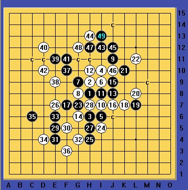

瑞星团12一道经典的地毯习题（难度高级）
#1 瑞星团12一道经典的地毯习题（难度高级） 作者：山城刀客 发表时间：2012-5-15 19:54:38
题目来源：实战对局
难度等级：五星★★★★★
题目简评：
这道来自实战的题目，堪称瑞星分枝地毯中的经典！某一刻，你似乎觉得找到了题目的答案，其实当你细拆就会发现原来自己离真相还很遥远，答案似乎在云里雾里，当你衣带渐宽后会蓦然发现，原来它就在离你很近的灯火阑珊处……本题目，黑棋需要借助全盘之力，各个方向做棋、进攻，才能完全杀出来，如若要地毯，就更为繁琐。期待大家完美的答案！！！
附最强一路：
［此帖子已被 山城刀客 在 2012-5-15 19:59:06 编辑过］
［ 冰雪笑醉 于 2012-5-15 20:39:54 时花20金币送鲜花一朵］
［ 冰雪笑醉 于 2012-5-15 20:39:56 时花20金币送鲜花一朵］
［ 冰雪笑醉 于 2012-5-15 20:39:58 时花20金币送鲜花一朵］
［ 有志青年 于 2012-5-15 21:01:50 时奖励此帖[金币加 100 威望加1］
#2 Re:瑞星团12一道经典的地毯习题（难度高级） 作者：冰雪笑醉 发表时间：2012-5-15 21:14:50
 好像很复杂啊
好像很复杂啊
辛苦杀棋中~~
#3 Re:瑞星团12一道经典的地毯习题（难度高级） 作者：冰雪笑醉 发表时间：2012-5-15 21:26:01
 大概这样，能杀出来！
大概这样，能杀出来！
［ 山城刀客 于 2012-5-15 22:07:54 时花20金币送鲜花一朵］
［ 山城刀客 于 2012-5-15 22:08:21 时花20金币送鲜花一朵］
#4 Re:瑞星团12一道经典的地毯习题（难度高级） 作者：冰雪笑醉 发表时间：2012-5-15 21:42:45
［ 山城刀客 于 2012-5-15 22:08:37 时花20金币送鲜花一朵］
［ 山城刀客 于 2012-5-15 22:09:05 时花20金币送鲜花一朵］
#5 Re:瑞星团12一道经典的地毯习题（难度高级） 作者：山城刀客 发表时间：2012-5-15 22:10:30
笑醉的33和我不一样，貌似比我的简单很多，要是那个33也地毯，就就真的太厉害了！！！
经验证，笑醉33地毯，厉害呀！！！！
［此帖子已被 山城刀客 在 2012-5-15 22:40:29 编辑过］
#6 Re:山城刀客【==Re:瑞星团12一道经典的地毯习题（难度高级）==】 作者：冰雪笑醉 发表时间：2012-5-15 22:24:54
你33下在哪呢？发出来看下
#7 Re:瑞星团12一道经典的地毯习题（难度高级） 作者：山城刀客 发表时间：2012-5-15 23:02:43
我用的是这个33，比较复杂！
以下是比较强的几路：

总体来看，笑醉的杀法比较简洁，不需要联系上面就可以完美杀出，值得学习！我当初也曾试过那个33，但由于没拆出来就放弃了，选择了当前的33，通过上下棋子联系起来，最终大风车绕转杀。
［此帖子已被 山城刀客 在 2012-5-15 23:05:15 编辑过］
［此帖子已被 山城刀客 在 2012-5-15 23:07:17 编辑过］
#8 Re:瑞星团12一道经典的地毯习题（难度高级） 作者：山城刀客 发表时间：2012-5-15 23:40:18
最后，送上这个必败26的地毯谱：

 团12必败的26.part01.rar
团12必败的26.part02.rar
团12必败的26.part03.rar
团12必败的26.part04.rar
团12必败的26.part01.rar
团12必败的26.part02.rar
团12必败的26.part03.rar
团12必败的26.part04.rar
［ 冰雪笑醉 于 2012-5-16 0:04:32 时花20金币送鲜花一朵］
［ 冰雪笑醉 于 2012-5-16 0:04:33 时花20金币送鲜花一朵］
［ 冰雪笑醉 于 2012-5-16 0:04:37 时花20金币送鲜花一朵］
#9 Re:山城刀客【==瑞星团12一道经典的地毯习题（难度高级）==】 作者：空恨社小仙 发表时间：2012-5-16 1:30:41
弱弱地问上一句,最近又听说瑞星团12已经被终结了,有人验证过吗?
#10 Re:瑞星团12一道经典的地毯习题（难度高级） 作者：没事摆石子玩 发表时间：2012-5-16 2:21:29
表示非常淡定 有的人嘴里 五子棋早被地毯了。。团12也只是一朵小浮云
#11 Re:瑞星团12一道经典的地毯习题（难度高级） 作者：山城刀客 发表时间：2012-5-16 3:33:37
去年，就有一个朋友亲口对我说瑞星团12和跳12均已地毯，我当时就很惊讶，问他要谱，一直没给我，不过我心里一直是怀疑的！！！作为我个人，从未想过要地毯这些，我深知自己的力量是很有限和渺小的，许多局面有生之年不可能完成的……对于我个人来说，没有地毯的局面我是不会公开轻易下结论的，至于别人到底有没有地毯，在看到终结地毯谱之前我真的不清楚！……
至于很多话语，也许都是神马一样的浮云，流言罢了，譬如数年前一些大师的话语：“丘斜一打两套杀”、“长星白地毯”、“瑞星黑必胜”……甚至还有大师要地毯疏星一二打等等！……在现在看来是那么的疯狂和不可思议，但这都是真实发生过的，每一天每一刻都在成为历史，许多不可能被历史证明是可能并且是绝对真实的，许多可能恰恰被证明是不可能甚至于荒谬的……
每天，都有奇迹在上演，同时，也有流言在延续，真相到底如何？还是让历史去检验吧！
［ 小丸.net 于 2012-5-16 7:25:41 时奖励此帖[金币加 100 威望加1］
［ 冰雪笑醉 于 2012-5-16 13:49:21 时花20金币送鲜花一朵］
［ 冰雪笑醉 于 2012-5-16 13:49:24 时花20金币送鲜花一朵］
［ 空恨社小仙 于 2012-5-18 4:16:37 时花20金币送鲜花一朵］
#12 Re:瑞星团12一道经典的地毯习题（难度高级） 作者：啊呆 发表时间：2012-5-16 10:52:37
每天，都有奇迹在上演，同时，也有流言在延续，真相到底如何？还是让历史去检验吧！［ 空恨社小仙 于 2012-5-18 4:16:56 时花20金币送鲜花一朵］
#13 Re:瑞星团12一道经典的地毯习题（难度高级） 作者：冰雪笑醉 发表时间：2012-5-16 13:48:53
 前年就听说松3地毯了，斜一地毯了， 可是也不少大师说根本没地毯，偶是个菜鸟，更不知道真相到底是神马~
前年就听说松3地毯了，斜一地毯了， 可是也不少大师说根本没地毯，偶是个菜鸟，更不知道真相到底是神马~
#14 Re:瑞星团12一道经典的地毯习题（难度高级） 作者：业余九级菜手 发表时间：2012-5-16 14:39:24
有终结谱才是真相！［ 空恨社小仙 于 2012-5-18 4:17:28 时花20金币送鲜花一朵］